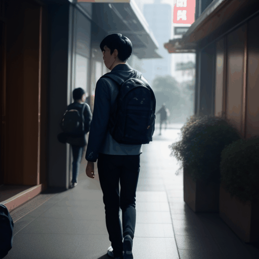

This homework helped me understand how text-to-video generation works as a complete workflow instead of a single automatic step. I used ComfyUI to connect the checkpoint, LoRA, VAE, AnimateDiff motion model, prompt schedule, sampler, decoder, and video combine nodes. The hardest part was not only writing prompts, but also debugging missing workflows, wrong node parameters, and compatibility issues between ComfyUI and custom nodes. I learned that video generation requires more control than image generation because the character should remain consistent while the scene changes over time. I also realized that frame count, seed, motion model, negative prompt, and output format all affect the final animation. Overall, this assignment gave me practical experience with building and troubleshooting an AI video generation pipeline.
生成完整角色動畫 - 1
使用提示詞:
"0" : "1boy, young male university student, black hair, navy jacket, backpack, walking through Taipei campus, soft morning light",
"8" : "1boy, young male university student, black hair, navy jacket, backpack, walking through Taipei campus, gentle wind, trees in background",
"16" : "1boy, young male university student, black hair, navy jacket, backpack, walking near university buildings, bright afternoon light",
"24" : "1boy, young male university student, black hair, navy jacket, backpack, walking near a Taipei street, warm sunset lighting",
"32" : "1boy, young male university student, black hair, navy jacket, backpack, walking through Taipei night market, neon signs",
"40" : "1boy, young male university student, black hair, navy jacket, backpack, standing under glowing lanterns in Taipei night market, cinematic lighting"
使用負面提示詞:
(bad quality, worst quality:1.2), blurry, low resolution, distorted hands, extra fingers, extra arms, bad anatomy
生成完整角色動畫 - 2
使用提示詞:
"0" : "1boy, young male university student, black hair, navy jacket, backpack, standing at a Taipei metro station, soft morning light",
"8" : "1boy, young male university student, black hair, navy jacket, backpack, walking inside a Taipei metro station, clean modern background",
"16" : "1boy, young male university student, black hair, navy jacket, backpack, entering a metro train, cinematic composition",
"24" : "1boy, young male university student, black hair, navy jacket, backpack, sitting inside a Taipei metro train, city lights outside window",
"32" : "1boy, young male university student, black hair, navy jacket, backpack, exiting the metro station near university campus, afternoon light",
"40" : "1boy, young male university student, black hair, navy jacket, backpack, arriving at Taipei university campus, peaceful atmosphere"
使用負面提示詞:
(bad quality, worst quality:1.2), blurry, low resolution, distorted hands, extra fingers, extra arms, bad anatomy
生成完整角色動畫 - 3

使用提示詞:
"0" : "1boy, young male university student, black hair, navy jacket, backpack, sitting in a university library, studying with laptop, soft indoor light",
"8" : "1boy, young male university student, black hair, navy jacket, backpack, reading notes in a university library, quiet atmosphere",
"16" : "1boy, young male university student, black hair, navy jacket, backpack, walking through a computer lab, monitors glowing",
"24" : "1boy, young male university student, black hair, navy jacket, backpack, working in a computer lab, blue screen light, focused expression",
"32" : "1boy, young male university student, black hair, navy jacket, backpack, walking outside the university building at sunset",
"40" : "1boy, young male university student, black hair, navy jacket, backpack, standing on campus at night, city lights, cinematic mood"
使用負面提示詞:
(bad quality, worst quality:1.2), blurry, low resolution, distorted hands, extra fingers, extra arms, bad anatomy